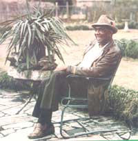
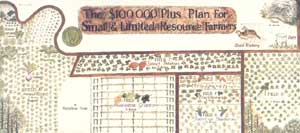
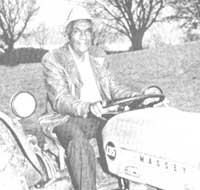

THE $100,000 25-ACRE FARM PLAN
STAFF PHOTOS
You might say that the problems facing America's small farms are like the mother: Everybody talks about them, but nobody does anything about them. After all, it does seem that most agricultural "experts" and country-oriented publications have lamented the plight of the family grower . . . and done so without suggesting any specific program of action to remedy the situation. Horticulturist Booker T. Whatley, though, is one individual who's definitely rolled up his shirt sleeves and started fighting for the small farmer. Over the course of the past eight years, this scientist developed a remarkable plan for a 25-acre family farm capable of providing a gross income of $100,000 a year, and he supervised a successful working prototype of his dream at Alabama's Tuskegee Institute.
And that's nut all. The recently retired agriculturist ("I'm retired but not retired, if you know what I mean") is currently overseeing the establishment of another model farm at Montgomery's Trenholm State Technical College . . . spreading the word about his innovative growing scheme through workshops and lectures (with the help of the huge 4' X 10' canvas map you see reproduced on the facing page) . . . consulting with officials in various states and nations about limited-resource farming schemes. . . and publishing the Small Farm Technical Newsletter to give specific instruction to individual growers.
Furthermore, although the effort to help save America's small farms is-at present-taking up the greater pan of Dr. Whatley's time, he's had a lifetime of varied horticultural experiences. Raised on a family farm in Annislon, Alabama, Booker received his B.S. in agriculture from Alabama A & M and a Ph.D. in horticulture from Rutgers University.
During the Korean War, he operated a 55-acre hydroponic farm in Japan. (The water-grown crops were needed to feed American troops . . . because the soldiers often contracted amoebic dysentery if forced to eat local produce raised in ground fertilized with "night soil", or human waste.)
Dr. Whatley has also originated 5 sweet potato and 15 muscadine grape varieties . . . written more than 40 scientific papers . . . done research in biomass fuel production . . . been elected a fellow of the American Society for Horticultural Science . . . and been honored by the Alabama State Legislature.
Yet this experienced professional hasn't let his credentials and successes taint his warm "just folks" manner. Indeed, when photographer Anita Ingle and writer Pat Stone flew down to Montgomery last January to visit the doctor and his wife Lottie, they were immediately made to feel like welcomed friends rather than strangers on a job. Nevertheless, the work got done ... the interview session started at eleven o'clock in the morning and wasn't completed until nine o'clock that night.
The opportunity to enjoy Booker and Lottie's manner of playfully teasing each other provided our staffers with a pleasant side benefit to the assignment, too. Whatever the question-who was better at giving directions . . . did the good doctor look presentable for his photo session ... or even who checked up on whom each night to make sure the house doors were locked-the couple (who've been together for 40 years) continually demonstrated a warm, lively, and affectionate relationship. Indeed, Dr. Whatley made a unique testament to their romance a few years back when he christened a new grape cultivar "the Foxxy Lottie"!
We think that you'll enjoy reading this edited transcript of the interview and-like us-come to suspect that Booker T. Whatley is onto something. While his plan clearly is not for everyone-and while we must recognize that there's a significant gap between conceiving and implementing any concept-its basic ideas do ring true. Most important, it's a concrete scheme for action ... a plan that, although it won't do a thing about the weather, may just help the small farm remain a vital part of the American economy.
PLOWBOY: Dr. Whatley, last November you gave a rousing speech at a symposium on small farms sponsored by the United States Department of Agriculture in Beltsville, Maryland ... a lecture that's since brought you attention from book publishers, newspapers, and-now-THE Mother Earth News(restricted).
WHATLEY: That's right. You know, I've been in the agricultural research game for 30 years, but that was the warmest reception I've ever had. Why, I actually got a standing ovation!
PLOWBOY: Tell us about the speech.
WHATLEY: I described my plan-based on a project done at Tuskegee Institute in Alabama-for a 25-acre farm that grosses over $100,000 a year.
PLOWBOY: It's hard to imagine a small farm bringing in that kind of money. Most such operations in this country are just barely surviving. In fact, a number of other speakers at the Beltsville conference maintained that family farmers can't make it on their own. As one of them, Luther Tweeten of Oklahoma State University, put it, "Small is beautiful... as long as you have an outside income."
WHATLEY: That is the attitude held by most professional agriculturists today. They think the only way for the little guy to survive is to become an "SS farmer" . . . who works in town all week and tries to tend the fields on Saturday and Sunday. But I don't buy that. It's just not so. No sir, this plan I'm talking about will provide year-round full-time employment.
The truth is that we professional agronomists have helped create the situation that exists today . . . we've made life hard on the small farmers by recommending that they grow exactly what the big boys produce. We'll tell a little guy with 40 acres to plant a scaled-down version of the crop mix that some fellow with 2,000 acres raises. For example, we'll suggest that he keep fifteen acres in cotton, ten acres in soybeans, seven acres in corn, seven in pasture . . . and then try to raise a few head of beef cattle. Well, those particular crops give a very low per-acre return, so what happens? The man works hard and just about starves to death.
I say let the big boys grow soybeans, cotton, hay, peanuts, and beef cattle. The plan I'm talking about takes the small farmer out of the big guys' ballpark.
PLOWBOY: Dr. Whatley, just what is your plan?
WHATLEY: There are five essential criteria for the success of this small-farm operation, and the first of them is that each crop component of a limited-resource farm must produce an annual gross minimum income of $3,000.
Let me give you an example. If a farmer here in Alabama plants one acre of land in cotton, and has a good year, he can expect to get one bale of cotton from that acre. Now a bale weighs about 500 pounds, and cotton's selling for around 70 cents a pound, so the man's annual gross income off that piece of land will be $350. However, if he takes the same acre and plants it in collards, he can get 8,000 bunches of greens. By selling those for 50 cents a bunch, he'll gross $4,000. And then, if he plants both a spring and a fall crop of collards, he can take in as much as $8,000 . . . that's $8,000 per acre versus $350!
If you look at the map of our plan [see the reproduction on above], you'll see the high-value crops I recommend in Alabama. The components of this particular farm are one acre of blackberries . . . two acres of rabbiteye blueberries . . . two acres of collards . . . five acres of muscadine grapes . . . one and a half acres of mustard greens . . . five acres of purple-hulled southern peas . . . one acre of strawberries . . . five acres of sweet potatoes . . . one and a half acres of turnip greens . . . and one acre, that's 60 colonies, of honeybees.
PLOWBOY: What's the second criterion essential to your plan?
WHATLEY: The components of the farm must provide year-round family income. People are always talking about the poor cash-flow pattern on a typical farm. This plan solves that problem. Strawberries-you've got to have a combination of early, midseason, and late varieties-will provide income from mid-April to mid-May. Blackberries will come in from mid-May to mid-June, and rabbiteye blueberries from mid-June to the end of July. Then you can harvest and sell one acre of your sweet potatoes from the last week in July to mid-August. Once that job's done, the muscadine grapes will begin to mature, and that harvest should last through September. In October the remaining four acres of sweet potatoes can be dug up and cured. They're sold, on a weekly basis, from November 1 to mid-April. On top of all that, southern peas provide additional cash flow in June, July, and October . . . greens come in from April to May and from October through December . . . and the various bee products can be sold year round.
You'll notice, then, that each crop has its own on-sale season, and that brings up my next point: The components of the farm must be compatible. They shouldn't compete with each other for labor . . . and you don't want everything coming in at once. Of course, there is some overlap in my plan, but it's manageable and-for the most part-desirable.
The fourth criterion is that the farm must provide year-round full employment. To attempt to work part- or full-time off the farm while following this plan is to invite disaster. The way we figured it when we first set up a working model at Tuskegee Institute, the labor requirement for the farm is 2.5 man-years.
PLOWBOY: Two and a half people?
WHATLEY: That might include full-time work from a man, three-quarter-time help from his wife, and one-quarter-time each from three teenage children.
PLOWBOY: All right, then, what's the fifth criterion for the $100,000 small farm?
WHATLEY: It should be a pick-your-own operation, with a clientele membership club. You see, running the farm on a pick-your-own basis eliminates the two major complaints of small growers ... no labor and no market. It lets the farmer avoid the cost of harvesting, washing, grading, packing, packaging, refrigerating, and transporting the produce. And it brings in buyers. More than once I've run across a farmer with five acres of turnip greens, who's just sitting there complaining that there's no market for the crop . . . when it'd be easy to get folks to pay for the chance to pick it.
PLOWBOY: Pick-your-own operations have been around-and been successful-for quite a while, but what exactly is a clientele membership club?
WHATLEY: That's the twist that makes this whole project innovative. The farmer has to seek out people-city folks, mostly-to be members of the club. The annual membership fee, $25 per household, gives each of those families the privilege of coming to the farm and harvesting produce at approximately 60% of the supermarket price. Sweet potatoes and honeybee products, by the way, are not pick-your-own crops, but members can still buy them at a discount. At any rate, one of these 25-acre farms should be able to support 1,000 member families, or around 5,000 people.
The clientele membership club is the lifeblood of the whole setup. It enables the farmer to plan production, anticipate demand, and-of course-have a guaranteed market. However, that means the grower had better work just as diligently at establishing and maintaining the club as at producing the crops. Put it this way: If you fail to promote your club, something terrible happens . . . NOTHING!
PLOWBOY: It sounds as if your farm family is going to have to live near a city.
WHATLEY: That's right. They should be located within 40 miles of some metropolitan center . . . that's pretty much a prerequisite for setting up one of these farms.
PLOWBOY: Are there any other conditions that you haven't yet mentioned?
WHATLEY: Yes, several. For one thing, the farm is going to have to be run as a well-managed, high-yield operation, so it's essential that irrigation be available for each crop component. And the place has got to be located on a hard-surfaced road so the customers can easily reach it. You'll have to keep it in a high state of maintenance, too . . . eliminating potential hazards and pests, providing comfort stations, and setting up a play area for children. You'll also need to get yourself $250,000 of liability insurance . . . perhaps through the local Farm Bureau. And your farm should be incorporated. . . for maximum legal and tax benefits.
Last, you must realize that it'll take five years for the operation to get into full production. After all, a lot of the crops-including grapes and berries-need a few seasons to get going. By the fifth year, though, a farmer should be able to gross $100,000 or more . . . and have a net income of one-third to one-half that amount.
PLOWBOY: You seem to have given a lot of thought to the details of this operation. Has such a plan always been the goal of your research?
WHATLEY: No ... in fact, I figure that at this point the most significant thing I've done for mankind is to develop the Carver sweet potato. I had to test over 200,000 different cultivars, and spend almost $1,000,000, to get that one variety, but it's already returned more than $10,000,000 to growers. In fact, Carver has now replaced Centennial in Cullman County, the leading sweet potato-producing county in Alabama.
Actually, I put my small farm idea together only after I came to Tuskegee Institute in 1973, and it was my work with sweet potatoes that took me there from Southern University in Louisiana. I was down at Southern trying to produce a quality "eating" sweet potato-which turned out to be the Carver- and one that'd be good for cattle feed.
DOING IT
Here's what four Alabama farmers told MOTHER about their Whatley-inspired growing efforts.
For the past few years, Charles Carter has been trying to operate "a little cattle farm that isn't doing too good" while maintaining a steady job with the local labor department. Charles is very enthusiastic about switching his 20 acres over to a Whatley-style farm, and hopes that doing so will enable him to become a full-time grower within the next few years. He's currently keeping his outside job, though ... so that he can-among other things-save up enough money to replace his 25-HP tractor with a 35-HP machine.
Last year, Carter grew seven acres of sweet potatoes, five acres of collard and turnip greens, and three acres of sweet corn ("corn's not on Whatley's plan, but it's a good seller"). He marketed an estimated $7,000 worth of his produce through supermarkets and door-to-door selling . . . while claiming that "I must have given half of my crops away". Mr. Carter figures he should have no major difficulty getting people to join a clientele membership club ("folks wanted to join last year, but I hadn't talked to my lawyer yet"), especially since he lives just a few miles away from a city of 100,000 residents.
Charles plans to start his membership club in 1982 and-during the same period-to put in a strawberry field . . . develop his small catfish pond . . . start a one-acre watermelon patch . . . and begin keeping bees (after he attends a three-day honeybee symposium Dr. Whatley is organizing). The single problem he's encountered so far-he reported to us-is coming up with enough money to invest in further farm improvements. "That's what's holding me back from buying a lot of small-fruit plants," Charles admitted.
In contrast to Carter's 20-acre spread, W.A. Fullilove farms 600 acres (about half of it rented) . . . growing soybeans, wheat, cotton, grain, and beef. And while he's not intending to switch to a complete Whatley-style farm, he allows that-partly thanks to the influence of Booker and the Small Farm Technical Newsletter -he's changing the focus of his farming this year ... by planting half as much land and moving more into vegetable growing. "Fresh vegetables and sweet potatoes demand more labor, and cost more per acre to produce, than do grain crops," W.A. says, "but the returns are a lot better." Just as important, he'll be able to "rent less land, farm less land, use less fuel, and not have to work so far from home".
This will be the first year of his switch from "big acres to small acres", Mr. Fullilove notes, so he's going to raise both 15 acres of vegetables and 40 to 50 acres of sweet potatoes while pasturing 150 cattle and continuing to grow some grains and soybeans. W.A. also adds that he's reluctant to plant small fruits or raise honeybees. He's afraid that if he gets too diversified, he won't be able to tend to all his crops well, and might just end up losing on one what he makes on another.
Mr. Fullilove intends to market his produce to local food stores and wholesalers. He may try pick-your-own harvesting on a small scale to see how well it works, and possibly will set up a clientele membership club sometime in the future . . . particularly if more residents move into the few towns in his mostly rural area.
Like W.A. Fullilove, Howard Millican is cutting back on the amount of land he'll farm and raising (at least for the time being) a mixture of standard commercial and intensive small-farm crops. He owns 200 acres, but hopes to "back up some" so that-eventually-he and his son will be able to make a living from 75 acres of land. Mr. Millican, though, seems committed to more of Dr. Whatley's ideas than is Mr. Fullilove. (In fact, when we talked with him, he had just come in from clearing some land for grape production.)
One of the aspects Howard likes most about Whatley's plan is the crop diversification. "Last year," he related, "I lost $5,000 or $6,000 on tomatoes. All the commercially grown tomatoes from north Florida to Kentucky came ripe at the same time, so we had to sell ours for very low prices. I'm going to protect myself by dividing my crops up more in the future."
Inspired by Dr. Whatley, Millican put in two ponds on his property last year and stocked them with 6,000 fish . . . but he says he lost the vast majority of that crop to thieves who repeatedly raided the ponds while the Millican family was attending church services. "I'm not going to bother with fishponds again until I can put them near my house, under lights, and inside a fence," he says.
He also figures to hold off keeping bees for a while, and admits he needs to do more research before putting in nut and blackberry crops ("I'm practically illiterate when it comes to raising blackberries"). He is planting other small fruits, though, while diversifying his vegetable production and expanding his irrigation capabilities.
Howard does intend to start up a clientele membership club . . . but not for two years, at which time more of his perennials will have started producing. "I don't think I'll have trouble finding members," claims Millican, who lives within 35 miles of Birmingham and two smaller towns. "I know of people who think nothing of driving 60 miles round trip just to pick two or three bushels of tomatoes."
When he begins to operate his club, Mr. Millican wants to put in a storage cooler ("so I can keep two or three kinds of fresh produce available at a time") and to transport the pickers between his parking area and his fields ("so the same kind of thieves that hit my fishpond won't be able to put me out of business").
Entomologist Frank Randle helped Dr. Whatley develop parts of the small-farm plan, and is putting much of it to use himself ("I'm going into diversified organic farming, using Booker's plan as a focal point"), Mr. Randle, who is currently both the Alabama state apiarist and a commercial beekeeper with 400 to 500 hives (on his own property and spread over various out yards), plans to work together with his horticulturist brother Mark. The two men come from a rural background, and hope to make their break from off-farm employment about a year from now (although Frank does intend to keep his bee business in operation).
Randle particularly likes the diversification and year-round income aspects of Whatley's plan. He's also convinced that-at least in his area, near Auburn University-clientele membership clubs can work. "At first I couldn't believe that people would pay me money to harvest my crops," he says, "but I've found that they will. It gives them a chance to feel they have a hand in putting food on their tables." Yet he plans to keep a strict limit on the number of his clients (last year, he had only 25 members, people who heard about his farm from friends). For one thing, Frank doubts that a 25-acre farm could support 1,000 members ("I've had individuals who picked five or six gallons of berries in a single visit!"). More important, he really doesn't want hundreds of people coming on his property. "I'm a rather private individual," Mr. Randle says, "and my family lives right here on the place. Besides, I have a lot of bees around. So I'd rather have fewer members, hire high schoolers to help me harvest the rest of the crops, and sell some produce to wholesalers and at local farm stands."
Having seen-in his capacity as state apiarist-many novices fail at large-scale beekeeping, Randle tempers his enthusiasm with caution when he talks about Whatley's small-farm scheme: "This plan demands an extremely high level of management . . . the kind of farming knowledge that's not easy to come by ... and a tremendous amount of capital-I'd say $100,000 to $125,000, even if you own your land-to purchase your tractor and other equipment, build a fishpond, and pay for fertilizer and plants and insurance. And I question some of Dr. Whatley's numbers, too. For instance, while bees are essential for pollinating your small fruits, local forage just won't support an apiary of 60 hives in most areas ... so I'd recommend starting off with two or three colonies and building up to 20 or 25 hives. In addition, I think the work will probably demand more than 2.5 people, and I don't think it would be realistic to expect to gross a full $100,000 even by the fifth year. Still, I think the basic concept of Whatley's plan is extremely valid.
"One thing is for certain," Frank continues. "Anyone who's motivated solely by that $100,000 figure would be a fool to get into this. Farming demands such an investment of time that one must be motivated by love of the land to succeed. I'd say my own goals are to feed other people for a living . . . enjoy being with and raising my family . . . earn a comfortable, middle-class income ... be my own boss . . . and leave this place a little better than I found it."
PLOWBOY: You wanted a sweet potato to feed to cattle?
WHATLEY: Well, corn yields in the deep South are so low, compared to those in the Midwest, that it hasn't been economical for farmers here to finish our beef cattle. It's made more sense-since it takes four pounds of corn to produce one pound of meat-for us to ship the animals up to the corn than to get the corn to the cattle. The carbohydrates in sweet potatoes, though, are for the most part equal to the carbohydrates in corn . . . and we can grow more pounds of sweet potatoes than corn per acre. So I thought a livestock potato would be a real boon to southern farmers.
Eventually I did come up with a fine white sweet potato-the average American doesn't like white-fleshed varieties, so no one would confuse them with those grown for human consumption- and named it Rojo Blanco . . . because it was red on the outside and white on the inside.
Of course, all this didn't happen overnight. It takes eight or ten years to get a good new sweet potato, you see . . . and that's only if God smiles on you.
PLOWBOY: I still don't understand how those experiments led you from Southern to Tuskegee.
WHATLEY: Well, I've always wanted to work at Tuskegee. After all, George Washington Carver had worked there, and he was a big breeder of sweet potatoes-as well as peanuts-himself. And then Booker T. Washington, the man I was named after, was the founder and first administrator of the school.
A 35-HP tractor-with attachments -is ideal for the small farm.
But what really motivated my move was the fact that Southern University is located in what's called a quarantined area. The sweet potato weevil problem is so devastating down there that you can't ship any plants out unless you first treat them with methyl bromide, and that kills the weevils and the sweet potatoes. In other words, I couldn't disseminate any new hybrids I developed! On top of that, the governor of Louisiana-when he heard about my trouble-offered me some breeding land in a nonquarantined area of the state. But that site was actually in the Angola state prison. Well, I've never liked prisons, so I decided to go home to Alabama.
PLOWBOY: Was Tuskegee interested in your sweet potato project?
WHATLEY: They didn't mind my working on that. The truth is- and most people don't realize this-that a black professor at a black university is about the freest individual in this country. It was my own idea, for example, to start doing honeybee and small-fruit research at Tuskegee. And my work in those three areas-sweet potatoes, small fruits, and honeybees-eventually led to my design for a successful 25-acre farm. The map you've seen is based on the actual farm we set up and operated at Tuskegee.
PLOWBOY: How did you get interested in honeybee and small-fruit research?
WHATLEY: That's simple. When I got to Tuskegee I soon learned that there was only one black apiculturist in the whole country . . . primarily because none of the black agricultural schools taught any beekeeping courses. Well, I wanted to get some students working in apiculture-heck, Booker Washington's wife taught a class in that subject back in her time-so I started a beekeeping program.
It was just as easy, when looking at the plight of low-acreage farmers, to realize that small-fruit production would make a lot more sense for them than growing cotton or corn. So I figured I'd better do some research in that area. You have to understand something: None of our country's current agricultural research is directed toward helping small farmers. The state agriculture schools in this country-set up by the 1862 and 1890 land grants-are focused on programs for big growers . . . simply because those are the people with money and powerful organizations.
Take soybeans, for instance. Every county in this state has a soybean association. Then the state has its own group, and there's a national organization, too. So if our senator Howell Heflin needs to hear from a lot of soybean growers in order to get funding for research, he can just call the president of the Alabama soybean council ... and have a few hundred telegrams on his desk in Washington the next morning! This kind of thing just doesn't happen in support of the little guys' specialty crops ... we don't spend any money in Alabama on purple cabbage research!
PLOWBOY: Where did you get the funds to support your small-farm studies, then?
WHATLEY: Once I'd worked out my plan, I approached the Rockefeller Foundation people, who gave me $250,000 for a three-year study. Then I assembled a team to develop the data and create a working model. I had help from an entomologist, a small equipment specialist, an irrigation expert, and a slew of other horticulturists, agriculture engineers, economists, apiculturists, and food scientists.
PLOWBOY: You obviously had more than 2.5 people, then, working to develop your plan. How did your team determine that the farm would require that unusual number of employees?
WHATLEY: We based that figure on information from a variety of sources . . . including the U.S. Department of Agriculture and the land-grant colleges. And we also kept track of the exact number of man-hours, and tractor-hours, that were required to produce the crops and run our trial pick-your-own operation at Tuskegee.
PLOWBOY: Let's talk about some other aspects of your plan. Are you aiming to reach people who are already farming, or folks who are trying to start from scratch?
WHATLEY: Our targets, initially, were individuals who owned from 25 to 150 acres of land . . . the farmers who are currently growing cotton, corn, soybeans, and cattle and being driven out of business. I've found, though-as I've publicized the plan-that the idea also appeals to lots of people who aren't yet farming.
PLOWBOY: Of course, someone new to agriculture would likely first have to acquire land, skills, and equipment. How much of an investment in tools would a completely unequipped newcomer need to make?
WHATLEY: He or she'd have to have a pickup truck . . . and one 35-horsepower tractor equipped with cultivation attachments, plows, disks, transplanters, a posthole digger, spray equipment, and fertilizer- and lime-spreading implements. All that gear would probably cost between $50,000 and $90,000. But the guy I'm really after is the guy who already has all that.
PLOWBOY: And that's who you'd like to see working full time on your plan. Now you've said that you're not partial to "SS farming", but wouldn't it make sense to suggest that inexperienced growers would be best advised to phase into the operation one step at a time?
WHATLEY: Yes, that's right. A lot of folks who become interested in the plan will start on some of the components and hold some other kind of job on the side. You know, they'll believe you a little
bit but-as the saying goes-only risk one eye at it. And that kind of approach makes sense for someone who's just starting out . . . but not for someone who's farming now and losing money.
PLOWBOY: What about growers in areas other than the South? Some of your suggested crops seem to have a limited regional appeal. Does that mean farmers in the West, Midwest, and Northeast can't follow your plan?
WHATLEY: Oh, no. Let me emphasize this: The crop mix will vary from area to area-after all, you have to raise products that grow and sell well where you live-but the plan's basic principles, and the five critical guidelines I mentioned, can be applied almost anywhere.
PLOWBOY: Would any of the crops remain constant across the country?
WHATLEY: Grapes. Your area may be better for labrusca or vinifera varieties, than for muscadines, but you can grow and sell grapes in most parts of the U.S. Strawberries are another crop that'll do well in many different areas ... as are small fruits like blueberries and blackberries or raspberries.
You'll also want to have honeybees . . . for one thing, you're going to need them to pollinate all your small-fruit crops. And don't forget, you can sell pollen, propolis, and pollinating services as well as honey. In fact, the small farmer should aim for total exploitation of the honeybee.
Sweet potatoes are popular everywhere, too, and folks who live in colder regions can often use black plastic mulch, or other season-extending techniques, to grow them. In an area wheresweet potatoes just won't grow, though, a farmer might go for rutabagas.
I also recommend that you add a fishpond to your farm, if possible, since it'll really help you draw members. Sure, building a pond is a big expense, but the Soil Conservation Service can help you plan and finance it. Then, once you have it stocked, you can charge $15 for fishing rights-in addition to the normal $25 membership fee-and, on top of that, charge people less for what they catch than the regular pay-to-fish operations do. Around here, for instance, folks usually pay a dollar or two to use a pond and then 84 cents to $1.00 a pound for what they catch. Well, you can sell your fish for 50 cents a pound.
PLOWBOY: What crops should vary from region to region?
WHATLEY: The vegetables. You might want to grow broccoli, cauliflower, spinach, or asparagus instead of the greens and peas I talk about.
PLOWBOY: Do tree crops have a place in your plan?
WHATLEY: Oh, yes, but only if they give a high-value return. For instance, I do recommend growing pecan trees here in Alabama . . . but not the standard varieties, because they take up too much room to give a good yield per acre. Some of the new semidwarf cultivars, though-such as Cheyenne-require a spacing of just 25' X 25'. . . can each give 40 to 50 pounds of nuts by their eighth year . . . and could definitely become a permanent component of a profitable small farm.
And you can take an innovative approach to marketing tree crops, too: Simply lease the tree! In other words, sell the rights to each pecan tree to one family for $50 per year. Then label the tree with the lessees' name, and they can visit during the year to see how their "property" is maintained. Just before harvest time, use tape to stake out a 25' X 25' square under the tree. Members of the family can come out, watch as you shake their tree, and pick up their nuts.
Now some folks might think that a person wouldn't pay $50 to gather the nuts from one pecan tree, but a lot of them will! It really happens. And not only with pecans . . . people will lease peach and apple trees, too. The fact is that some city folks are the easiest people to sell things to in this country.
PLOWBOY: Your plan is based on getting people to join the farm's clientele club. But if the members have to pay $25 or more up front, they're going to have to pick a good bit of produce before they can make much of a saving.
WHATLEY: Well, most folks will pick a whole lot and then freeze it, so they'll make out all right. Take blueberries, for example: They've been like gold around here for the past two or three years.
I’m talking about farmers who are going to be netting somewhere between $30,000 and $50,000 a year. . . . I'm not talking about subsistence ... I’m talking about making a living!
Why, the little 12-ounce boxes from New Jersey or Michigan cost from $1.29 to $1.69 apiece . . .but a member can go out, pick 15 or 20 pints of blueberries at a 40% saving, and know they're fresh.
There's a lot more to it than that, too. We're bringing up whole generations in this country today that don't even know how collards or chickens are raised. So some parents see a farm visit as a wholesome and pleasant educational experience for their youngsters . . . one that the entire family can share. The average middle-class city person likes a chance to get out on a farm. It's a form of entertainment, and those folks can save money while they're having a good time. Why, people used to drive all the way from Birmingham-a good 150 miles away-to pay to pick food at Tuskegee.
Furthermore, folks like to belong to groups . . . whether the organization is the Montgomery Golf Club or a farmer's clientele membership group.
PLOWBOY: How does a farmer go about finding members in the first place?
WHATLEY: You can put a club together by telephone calls . . . posters in office buildings or other public places . . . and newspaper, radio, or TV announcements. You've got to reach the people who have home freezers and let them know what you're offering. That's the main thing.
And after you get your customers, you've got to cultivate them just like you cultivate crops. You might-for instance-put out a little newsletter, mentioning your members' birthdays and reporting any news from your farm. You'll probably want to give the head of each household a numbered, laminated identification card, too. You could even put a recorder with a when-to-pick-what message on your telephone. Oh, running a membership club isn't easy, but all jobs involve work. In short, you've got to be a good manager . . . some folks could be the best kind of growers but not be able to get along well with other people, and they'd never make a go of this sort of small farm.
PLOWBOY: How come there's not much livestock in your plan? Aside from honeybees and fish, the only type of stock indicated, on your map is quail.
WHATLEY: Those birds are a high-value crop. You can raise 30,000 quail on an acre of land. And-here again I'm talking about the total exploitation of your products-you can sell the livers, pickle the surplus eggs and market them to bars, and even use the feathers and hollowed-out eggs to make salable jewelry. Pheasants, and perhaps turkeys, could be high-value livestock, too. In some areas, rabbits might be a viable farm component . . . but there's no market for rabbit meat down here.
I definitely don't recommend raising traditional farm livestock-such as chickens, cattle, and hogs-because they just don't give a high enough per-acre return. Why, in Alabama, it takes three acres of land to support just one cow or calf!
PLOWBOY: How about keeping, say, just one pig for your own meat?
WHATLEY: That doesn't make sense. You have to feed it and spend time taking care of it. Why, by the time you're done, your pork chops'll probably cost about $10 a pound!
PLOWBOY: What about keeping a few chickens to produce your own eggs?
WHATLEY: That's not worthwhile, either.
PLOWBOY: Goats for milk? WHATLEY: No.
PLOWBOY: Sheep for meat?
WHATLEY: NO. Look, I'm talking about farmers who are going to be netting somewhere between $30,000 and $50,000 a year . . . they can buy center-cut pork chops at the supermarket just like anybody else! I'm talking about people who'll go to the Bahamas or Europe for vacation. I'm not talking about subsistence . . . I'm talking about making a living! If these farmers get a taste for champagne, I'm not recommending that they make their own . . . they can go out and buy it.
PLOWBOY: You don't even suggest having a kitchen garden . . . like the one shown on your map?
WHATLEY: I put that on there when I was trying to appeal to the Rockefeller Foundation. I thought they'd like it. But you can study my farm plan closely, and you'll see that those two and a half people working on it are going to be pretty busy without trying to maintain a garden on the side.
Now that doesn't mean people won't have gardens ... if that's what they want to do, fine. What I recommend and what people actually do are two different things altogether. If we had 100,000 of these farms in the U.S., I don't imagine that any two of them would be just alike.
PLOWBOY: And do you really believe a person can take in $ 100,000 or more from a 25-acre farm?
WHATLEY: Sure, and that's without even counting all those $25 membership fees.
PLOWBOY: You're kidding!
WHATLEY: Just look at the numbers. I showed you earlier how to make $4,000 an acre off each crop of greens. Well, let's be safe and say you make just $3,000 an acre. You've got five acres of those greens, and they give you both a spring and a fall crop so how much money will they bring you?
PLOWBOY: $30,000.
WHATLEY: Right. Now, you've got five acres of sweet potatoes. You can get 600 to 800 bushels an acre of those . . . but we'll be conservative again and say 600. You can probably sell each bushel for $8.00. So figure 3,000 bushels at $8.00 each . . . that's another $24,000.
Then you have five acres of southern peas. You get 300 bushels per acre of those vegetables and, again, two annual crops. So that's a total of 3,000 bushels, and they can go for $5.00 each ... or $15,000 in all. In addition, you can sell a shelling service. Most folks aren't going to want to spend hours shelling the peas they buy, so you use a mechanical sheller-which can go through a bushel in a minute-and charge them $1.50 for each bushel of peas you shell. That can bring in another $4,500. So how much have you earned so far?
PLOWBOY: That'd be $30,000 plus $24,000 plus $15,000 plus an extra $4,500 . . . that's $73,500.
WHATLEY: Then you've got two acres of blueberries. That's 1,210 plants. You could get as much as 25 pounds per plant, but let's say you get 20 ... that'd be 24,200 pounds of blueberries. Sell those for 60 cents a pound and what do you get?
PLOWBOY: Let me see ... uh, that's another $14,520.
WHATLEY: OK. You can also harvest 300 bushels of blackberries from your one acre of that fruit. Each bushel weighs about 50 pounds, so you've got 15,000 pounds of berries that go for 60 cents a pound ... or $9,000. How much have you earned now?
PLOWBOY: $73,500 plus $14,520 plus $9,000: That's $97,020!
WHATLEY: And I haven't even got to the strawberries or honey or grapes! So you see, my problem isn't selling the plan . . . it's the fact that it oversells itself. The concept sounds so good that people find it difficult to believe.
PLOWBOY: It does sound amazing. Still, a plan's just a plan until somebody actually makes it work. Are any farmers actually grossing $100,000 a year from a farm based on your model?
WHATLEY: No. You've got to remember, it takes five years to get into full production, and I've been promoting the idea only since the second day of November 1980 . . . when an article about it appeared in the Birmingham News. I got so much response from the one story that I went on to hold 14 workshops around Alabama to explain the small-farm idea further.
Then, this past September, I retired from Tuskegee Institute and started to publish my monthly Small Farm Technical Newsletter, which details the different aspects of the plan. That newsletter's got over 4,000 subscribers now. In November I gave my talk at the Small Farm Symposium in Beltsville . . . and that speech got a lot of folks-including your magazine-interested.
As you can see, though, I haven't been pushing the idea very long . . . it's still pretty new.
PLOWBOY: How many people are currently in the process of trying your plan out?
WHATLEY: I don't really know. The way Whatley Farms operates right now, we have a board of directors and set policy and all, but there are no employees. I do all the work. So although I get calls from guys who've been losing money growing soybeans and say they're going to do my plan, I haven't been able to follow up on them. I can talk more specifically about Alabama than about any place else, and right now I'd say there're 40 or 50 people in Alabama trying out part of my model, but not more than a dozen who are aiming to go for the whole ball of wax. [EDITOR'S NOTE: See the sidebar that accompanies this interview to find out about the efforts and experiences of some of these people.]
PLOWBOY: Do you advocate some of the newer farming techniques, like integrated pest management and no-till agriculture?
WHATLEY: Very definitely. For instance, I recommend not tilling the perennial crop areas. Instead, keep those plots-all except the rabbiteye blueberry fields, which require a different soil pH-companion-planted with crimson clover. And wait until the clover's seed heads mature and then bush-hog, rather than cultivate, the plants. That way, you can add organic matter and nitrogen to your soil, prevent erosion, and provide a good pasture for your honeybees . . . and the clover will reseed itself!
I also advise growing three annual crops that have complementary soil needs, and planting equal acreages of each. Then you can rotate the crops to avoid depleting the soil or encouraging the types of pests that tend to winter over. The three annuals I recommend here are sweet potatoes, southern peas, and greens. Again, though, folks in other regions might want to rotate different crops . . . perhaps sweet corn, Irish potatoes, and cantaloupes or pumpkins.
PLOWBOY: I've noticed that your newsletter does recommend the use of various commercial sprays from time to time . . . how do you feel about organic growing methods?
WHATLEY: If someone wants to raise all the crops organically and then emphasize that point as part of the club's promotion, that's fine by me. I try to reduce the use of pesticides and chemical fertilizers because, for one thing, they're expensive . . . and the bottom line-as in any business-is what's left after you subtract your costs from your sales total. But I'll use those products when I need them and I know they can work. For instance, I do spread some chemical fertilizer in the little garden out behind my house, but I'm also a strong believer in mulch . . . that plot's got a foot of sawdust in it and every leaf I've raked up around the place, too.
Let me put it this way: I make every effort to operate right at the state of the art. But at the same time I'm not going to let army worms eat up my garden . . . not if I can help it.
PLOWBOY: To be successful at implementing your plan, a farmer's going to have to get the best possible yield per acre. He or she will, indeed, have to know how to operate at the state of the art.
WHATLEY: That's right. And most agriculture professionals in this country have a misconception of what the small farmer of the future is going to look like. They think that if he's white, he'll always
be chewing tobacco and have juice running out both sides of his mouth and sopping down under his chin . . . and that if he's black, he'll wear an old hat and patched-up overalls and "split" every verb that comes out of his mouth, saying things like "they is" all the time. But the small farmer of the future-man or woman, black or white-is going to be a professional. I say this plan of mine is for a "limited resource" farm, but the only limited resource this farmer will have is land. That person will know his or her job!
I want you to understand something. The reason for the demise of the small farm isn't that the growers have failed ... we scientists in agriculture are the ones who've failed. All we've been doing is describing and describing the plight of the little guy. Every few years one of us will do another study showing just how bad the small farmer's problem is, but each time there're fewer of those folks left to describe. We're about to describe them right off the farm!
In my opinion, agricultural researchers can no longer afford the luxury of stopping their work at the descriptive stage, so I'm trying to promote a plan that'll help the situation. Now some other professionals will probably try to talk this idea to death, too, just as they're doing to small farming in general . . . but I don't intend to let them do it!
PLOWBOY: Why is it that other professional agriculturists have failed to come up with concrete proposals to help the small farmer?
WHATLEY: Look, between 60% and 70% of all the people with Ph.D.'s in the agriculture business graduated from just ten universities. So we're a homogeneous group to start with. And on top of that, we all go to the same horticulture society meetings. In short, it's difficult for the vast majority of us to get away from our training. Most of us talk only to each other . . . and don't talk to the farmers.
Well, I'm comfortable with farmers. I don't try to talk over anybody's head ... I don't try to be arrogant . . . and, on the other hand, I don't criticize agencies like the agricultural extension service or experimental stations when I'm talking to people-even though those folks don't have much credibility with farmers-because, after all, I've been part of that system for 30 years. Of course, some folks at those agencies and stations may criticize me. . . but that just makes my clientele, the little guys, more willing to hear what I have to say.
PLOWBOY: Why do you suppose you have a knack for understanding the farmer's point of view when most other experts don't?
WHATLEY: Now listen. I grew up on the farm . . . it's not strange to me. My granddaddy made all the syrup that came out of his community, castrated all the hogs, shoed the horses, built the doorsteps ... he was one of those guys who could do everything. But he never went to school. He just had a head full of common sense. So when folks tell me my plan is too complicated for small farmers to handle, I don't believe them. I was brought up on a farm a whole lot more complicated than this one.
PLOWBOY: Is that why you chose to work to help save our small farms . . . because you were raised on one yourself?
WHATLEY: I'm afraid that if I don't do it, nobody else will. When I spoke to representatives of the USDA in Washington, D.C.-back in February of 1981-one of the economists there raised his hand and said, "There're about 220,000,000 people in this country, and you say that one of your farms can supply its products to 5,000 people. Even if your plan is 100% successful, then, you're going to save only 44,000 small farms." Well, I told him if we continue the way we're going, by the year 2000 we won't have any small farms left at all!
I'm going to do what I can to keep that from happening. The time I still have on this earth will be devoted to helping small farmers develop efficient and profitable operations.
EDITOR'S NOTE: A one-year subscription to Dr. Whatley's monthly Small Farm Technical Newsletter- which will include all the back issues printed to date-costs $12 and is available from Whatley Farms, Inc., Dept. TMEN, P.O. Box 2827, Montgomery, Alabama 36105. Groups that might want to contact Dr. Whatley for speaking engagements can write to Mr. Edward Stevens, Dept. TMEN, 130 South Anton Drive, Montgomery, Alabama 36105.
MOTHER would like to thank John Holt, subject of the Plowboy Interview in issue 64, for first acquainting us with Dr. Whatley's work.
|
 |
 |
 |